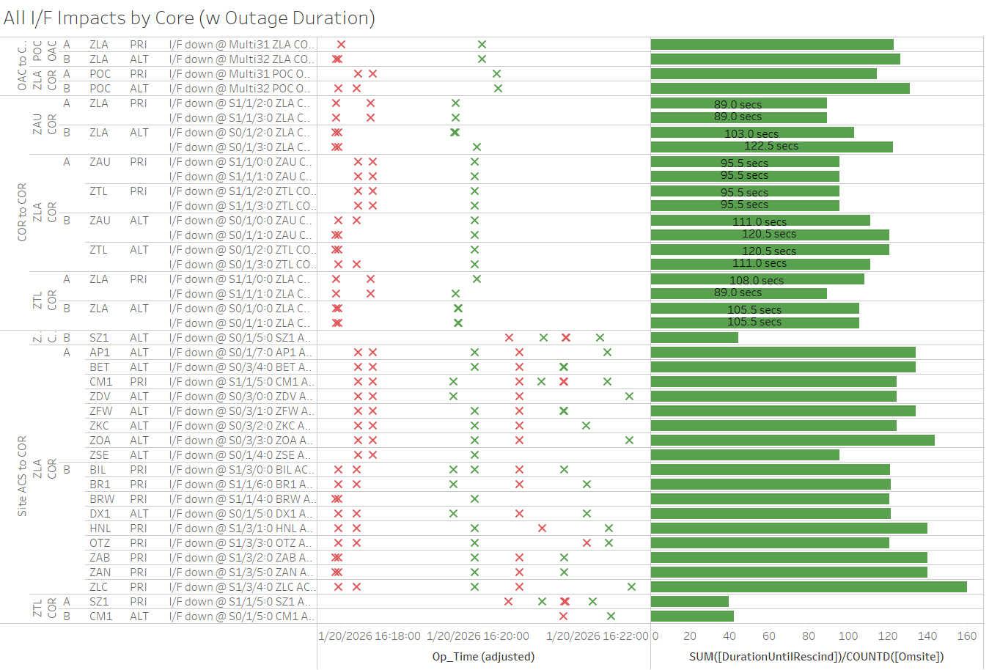

Weekly Highlights 20260114-20260121
1/15 - NOC OM Processor Replaced
- 1/15 14:13 - NOC OM to Maintenance Mode to replace O&M Processor -- ref LIR 240086721; restored to Normal at 1/15 19:26
1/15 - ZAB Freq Std Replaced
- 1/15 20:40 - ZAB returned to Maintenance after
replacing Frequency Standard; restored
to Normal at 1/15 21:09
- ZAB WRE-A - 1/7/26-1/16/26 - Technician determined Freq Std failed; part on order... ref LAD 1102085624
1/12-1/16 - ZLA WRE-C RF Site Survey
- 1/12 22:18 - ZLA WRE-C to Maintenance for RF Site Survey activities -- ref LIR 1104454824
- 1/16 20:17 - ZLA WRE-C returned to Maintenance
after RF Site Survey complete -- ref LAD
1104454824; faulted initially with SE
60 Rcvr Init Fail...
- 1/16 20:51 - ZLA WRE-C alarmed with SE 312 Receiver Exception Data Present...
- 1/16 01:12 - ZLA WRE-C restored to Normal
1/18 - ZAB WRE-C Impacted for Power Work
- 1/18 04:55 - ZAB WRE-C to Maintenance
for XFR Switch replacement-- ref LIR 1106678124; restored to Normal at 1/18 07:26
1/19 - NOC OM Archive Storage Full
- 1/19 04:29 - NOC OM Archive Storage 100% Capacity; RMD changed at 1/20 09:44
1/19-1/21 - G4 Geomagnetic Storms
- 1/19 21:03 - All C&Vs alarmed with SE 757 IGPs with High GIVEI; G4 (Severe) Geomagnetic Storm Alert -- ref LIR 1107305224; SEs rescinded at 1/20 01:32 (~162456 seconds)
- 1/20 19:13 - All C&Vs alarmed with SE 831
Extreme Storm Predicted 20:13; G4
(Severe) Geomagnetic Storm Alert
Issued
- Multiple SE 831s and SE 832 Extreme Storm Cancelled until SE 833
- 1/20 19:37 - All C&Vs alarmed with SE 757 IGPs with High GIVEI; SEs rescinded at 1/20 02:07 (~23391 seconds)
- 1/21 02:15 - All C&Vs alarmed with
SE 833 Extreme Storm in Progress;
WAAS Service is degraded due to Solar Storm activity. FDC NOTAM 6/5437 issued.-- ref LIR 1107958624 - 1/21 02:17 - All C&Vs alarmed with SE 757 IGPs with High GIVEI...
- 1/21 15:12 - All C&Vs received SE 834 Extreme Storm Clearing 16:12...
- 1/21 16:12 - All C&Vs received SE 835 Extreme Storm Cleared; SEs 834 and 757 rescinded; High IGPs / Degraded for ~50224 seconds


1/19-1/20 - CCC Trips
- 1/19 23:17 - CCC trip for GEO 135 on all C&Vs
- 1/20 00:04 - CCC trip for GEO 135 on all C&Vs
- 1/20 00:07 - CCC trip for GEO 131 on all C&Vs
- 1/20 00:10 - CCC trip for GEO 133 on all C&Vs
- 1/20 00:25 - CCC trip for GEO 131 on ZLA and ZTL C&Vs
- 1/20 21:40 - CCC trip for GEO 133 on all C&Vs
1/20 - ZLA Comm Impact for Both Cores
- 1/20 16:17 - Multiple comms impacted at ZLA
affecting both Core Routers; all lines
cleared by 1/20 16:20 (~131
seconds)
- Uncommanded S15 BR1 GUS Selected Source C&V changed from ZLA->ZTL then back ZTL->ZLA ~3 seconds later...
- 1/20 16:18 - L1/L2 Bias Errors for MSD, MPR, and MMD at ZLA C&V

1/21 - ZSU Subframe Reasonability
- 1/21 00:43 - ZSU all WREs alarmed with SE 728 Subframe Reasonability and PID WRS Down for all C&Vs
1/21 - ZOA WRE-A Power Work
- 1/21 05:17 - ZOA WRE-A to Maintenance for
shutdown to faciltate CM on CKT BKR panel that powers cabinet per ZOA-- ref LIR 1107932924; restored to Normal at 1/21 08:40
1/21 - L1/L2 Bias Error
- 1/21 08:01 - CDB L1/L2 Bias Error
1/21 - CM1 L5 Signal Quality
- 1/21 09:58 - CM1 GUS alarmed with SE 134 L5 Signal Quality Degraded; SE cleared after ~92 seconds
Various Comm Impacts
* Only captures major / long-term comm outages
Other Sites
- 1/14 03:28 - ZMA Ring 1 PRI / Ring 2 ALT comms down hard; both lines cleared at 1/14 03:32 (~200 seconds)
- 1/14 04:51 - CDB Ring 2 comms down hard; line cleared at 1/14 05:10 (~1139 seconds)
- 1/14 04:09 - ZTL-Mexico Ring 1 Ethernet comms down
hard -- all MX offline; line cleared at
1/14 04:11 (~103 seconds)
- 1/14 04:11 - L1/L2 Bias Errors for MSD and MMX WRSes
- 1/14 05:22 - ZTL-Mexico Ring 1 Ethernet comms down
hard -- all MX offline; line cleared at
1/14 05:24 (~100 seconds)
- 1/14 05:25 - L1/L2 Bias Errors for MMD and MPR WRSes
- 1/14 15:58 - BET Ring 1 ALT / Ring 2 PRI comms flapping; last events cleared at 1/14 18:33 (~807 seconds)
- 1/14 20:18 - ZTL-ZLA Ring 1 PRI comms looped and several comms impacted at ZLA COR-A clearing after ~20 seconds; loop cleared at 1/14 20:22 (~261 seconds)
- 1/15 04:41 - Reset ZLA COR-B to address ZTL-ZLA Ring 2 PRI comms; router restored at 1/15 04:48 (~431 seconds), but ZTL-ZLA Ring 2 PRI comms still down...
- 1/15 16:44 - ZTL-ZLA Ring 2 PRI comms looped; loop cleared at 1/15 16:55 and line cleared (~175k seconds)
- 1/15 04:41 - Reset ZLA COR-B to address ZTL-ZLA Ring 2 PRI comms; router restored at 1/15 04:48 (~431 seconds), but ZTL-ZLA Ring 2 PRI comms still down...
- 1/15 16:44 - ZTL-ZLA Ring 2 PRI comms looped; loop cleared at 1/15 16:55 and line cleared (~175k seconds)
- 1/15 18:11 - BET + BRW + OTZ Ring 1 PRI / Ring 1 ALT comms flapping; last events cleared at 1/15 18:59 (~1833 seconds total)
- 1/16 10:54 - CM1 Ring 1 ALT / Ring 2 PRI + YFB Ring 2 comms down hard; all lines cleared at 1/16 13:27 (~9176 seconds)
- 1/16 13:16 - CDB Ring 1 comms flapping;
last event cleared at 1/16 13:45 (~742
seconds total)
- 1/16 13:43 - CDB alarmed with L1/L2 Bias Error
- 1/16 13:51 - CDB Ring 2 comms flapping; last event cleared at 1/16 14:02 (~334 seconds total)
- 1/17 01:05 - BET Ring 2 PRI comms flapping...
- 1/17 01:43 - BET Ring 1 ALT comms flapping; both lines cleared at 1/17 02:51 (~316 seconds total)
- 1/17 13:18 - HNL Ring 1 ALT / Ring 2 PRI comms flapping; last events cleared at 1/18 05:36 (~23215 seconds total)
- 1/17 15:24 - YFB Ring 1 comms flapping; last event cleared at 1/17 15:47 (~471 seconds total)
- 1/20 02:28 - HNL Ring 1 ALT / Ring 2 PRI comms down hard; both lines cleared at 1/20 02:37 (~525 seconds)
- 1/20 10:49 - YYR Ring 1 + YFB Ring 1 comms flapping; last events cleared at 1/20 10:52 (~172 seconds)
- 1/21 10:57 - CDB Ring 1 comms down hard; line cleared at 1/21 11:05 (~446 seconds)
1/13/26-1/15/26 ZTL-ZLA Ring 2 PRI comms down
ISR 0114-1229 || ZLA<>ZTL Net2 PRI2 (W042325) down
-- ref LIR
1105315224
- 1/13 16:24 - ZTL-ZLA Ring 2 PRI comms
down hard;
ISR 0114-1229 || ZLA<>ZTL Net2 PRI2 (W042325) down-- ref LIR 1105315224... - 1/14 20:18 - ZTL-ZLA Ring 1 PRI comms looped and several comms impacted at ZLA COR-A clearing after ~20 seconds; loop cleared at 1/14 20:22 (~261 seconds) (think this was a mistake in loopback checking; if they repeated this test on Ring 2 PRI, it did not show the loop)
- 1/15 04:41 - Reset ZLA COR-B to address ZTL-ZLA Ring 2 PRI comms; router restored at 1/15 04:48 (~431 seconds), but ZTL-ZLA Ring 2 PRI comms still down...
- 1/15 16:44 - ZTL-ZLA Ring 2 PRI comms looped; loop cleared at 1/15 16:55 and line cleared (~175k seconds)
5/11/23 Mexico Ring 2 Down Hard...
- 5/11/23 17:01 - MX Ring 2 SatCom upgrade begins; MX Ring 2 OFFLINE until upgrade troubleshooting is complete...
- Targeting network upgrade in CY26
List of current offline WREs
List of current offline WREs -- ref WAAS Status Monitor
All Depot shipments to Mexico are halted until the customs process can be finalized
Currently working to assess MX Inventory to determine equipment refresh and restoration needs...
- MMD WRE-C - 10/20/25-... - Good Freq Std swapped into WRE-A to restore -- ref LIR 211505621
- MTP WRE-A - 9/23/25-...
- PCU Failed after power outage; PCU-B swapped
into WRE-A but DC output is non-functional...
ref LAD
1060696524
- Planning to swap PCU-C into WRE-A -- this will remove WRE-C from service, but allow us to restore WRE-A for analysis
- MTP WRE-B - 11/18/24-... - Receiver inits failing due to no DC Power from PCU; PCU swapped with PCU-A after PCU-A failed -- ref LIR 898330924
- MPR WRE-B - 5/3/24-... - Inits failing -- looks like a bad freq std; due to shipping issues, there is no spare Freq Std and no ETA to recover WRE-B... -- ref LIR 44170821

Major Events


Core I/F Status

Comm Events

Mexico Comm Status